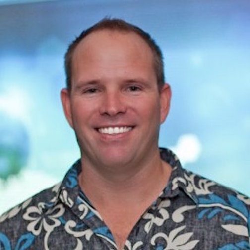

Executive Summary Accomplished business leader & sales executive with over 18 years of executive-level technology sales experience in both domestic and international markets. Proven ability to guide operational, team and revenue advancement in developing technology services and productization. Experienced in marketing, sales, design, development, hardware, strategy, and implementation in the application of emerging and existing technology.